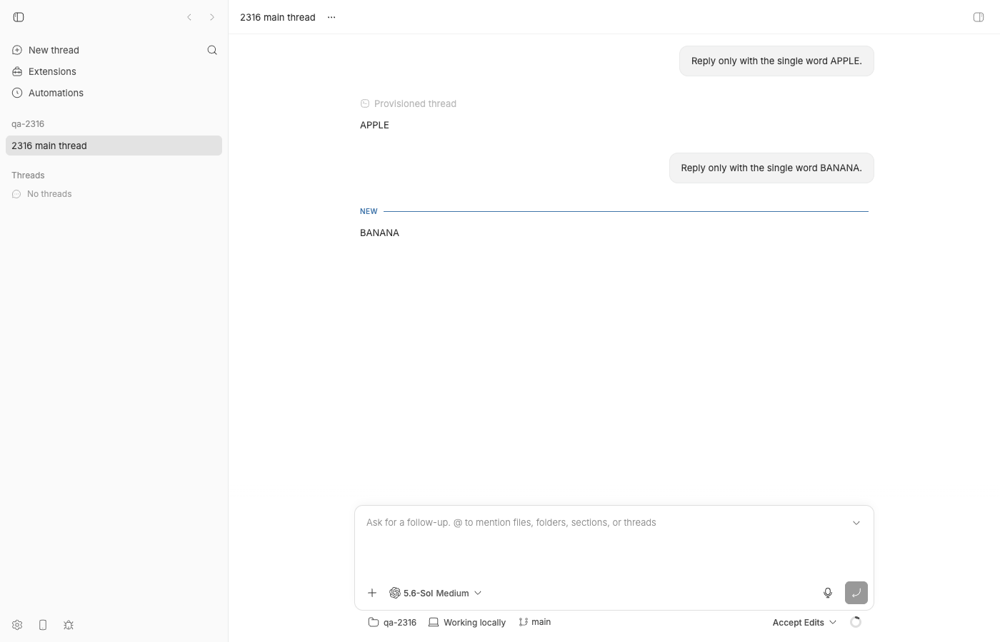
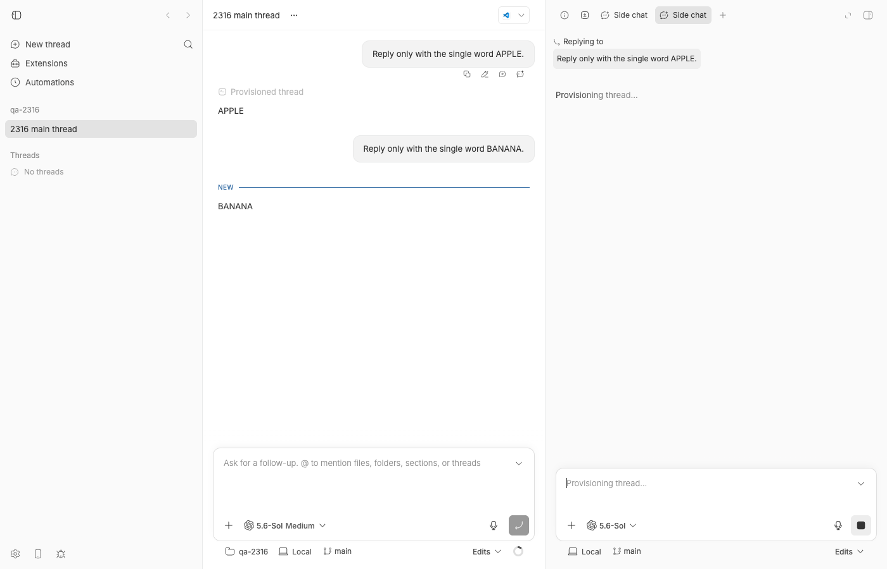
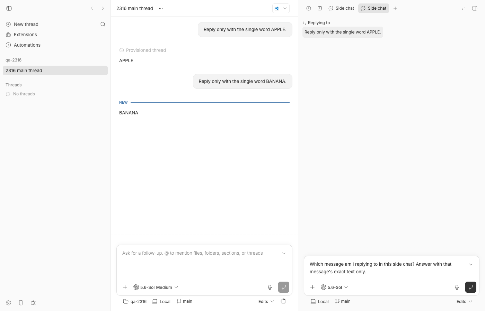
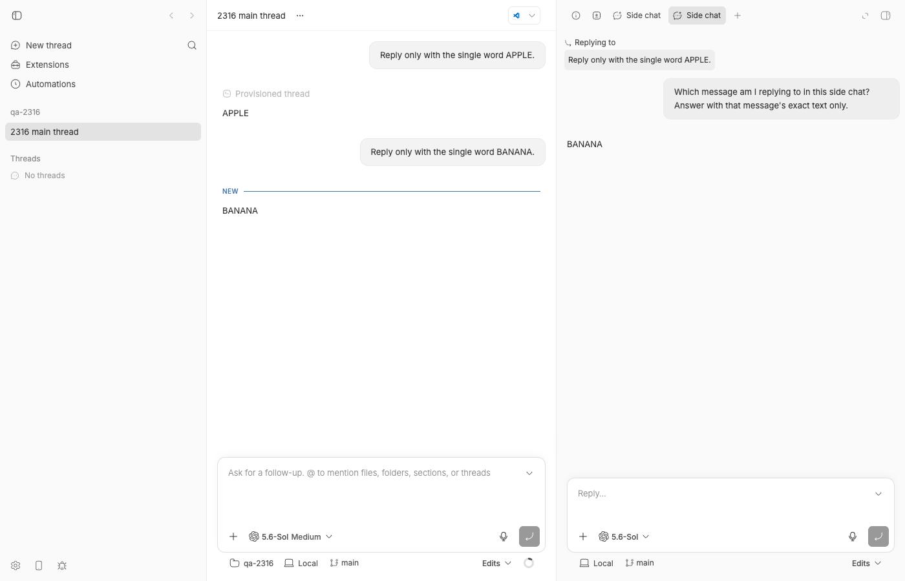
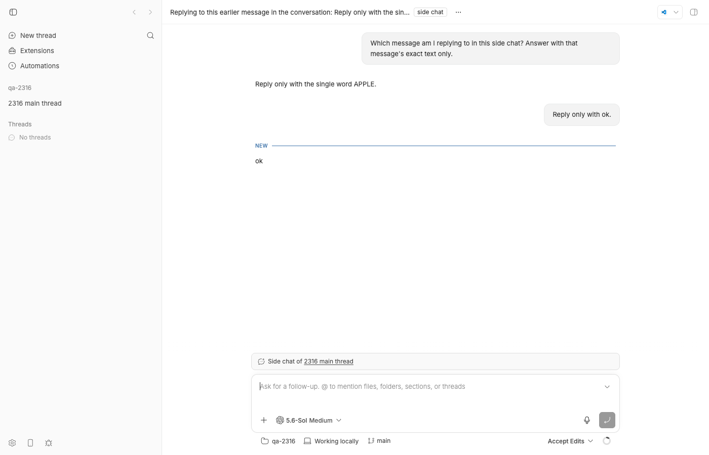

#2316 · Side-chat reply anchor is persisted but omitted from the first provider turn
Verdict: REPRODUCED · Root-cause confidence: high
1. TL;DR
When you pick an earlier message in a thread and choose Reply in side chat, the side-chat panel shows a "Replying to" quote of that message, but the agent never receives it. The side-chat plugin asks the server to fork the thread with an agentContextSeed ("Replying to this earlier message in the conversation: …"). The server persists that seed in the fork's client/turn/requested event, but the zero-input thread.start that clones the provider session deliberately sends input: [] (no input ⇒ no turn), and nothing ever replays the withheld seed: the user's first message goes out as a bare turn.submit. Result: the model answers from the forked history alone. In the common tip-fork case (replying to the opening user message, or a selection) the model literally does not know which message the user is replying to — in my live run it answered BANANA while the panel said "Replying to: Reply only with the single word APPLE." I reproduced this with a server test at the exact code path (fails on main with the issue's exact assertion error), and on the wire with provider-bridge recordings against a real Codex session; a 60-line server-side fix makes both pass and the model then answers correctly.
2. Claims vs findings
| Claim from the issue | Status | Evidence |
|---|---|---|
| "Reply in side chat" displays the selected source message under "Replying to". | Verified | Screenshots 02/04. Note the bubble is rendered from the panel tab's sourceMessageText param (plugins/side-chat/app.tsx#L182-L190), not from the persisted seed, which is why the UI looks right while the model is blind. |
| The explicit agent-only reply anchor is omitted from the first provider turn. | Verified | Repro test fails on main (§4A); bridge recordings show turn/start.input containing only the user's text for two real forks (§4B, appendix). |
| The forked provider session inherits conversation history. | Verified | Recorded thread/fork carries sourceProviderThreadId (+ checkpoint for point forks); the model answered from that history (APPLE/BANANA). |
Still reproduces on current origin/main (7e10ea4b). | Verified | Reproduced at 494f66526; git log 7e10ea4b..HEAD -- plugins/side-chat apps/server/src/services/threads/{thread-fork,thread-provisioning,thread-send}.ts is empty; git log 494f66526..origin/main is empty. |
Root cause: seed-only idle fork sets providerInput: [], which removes the seed from the zero-turn fork. | Verified, incomplete | True (apps/server/src/services/threads/thread-fork.ts#L112-L153, apps/server/src/services/threads/thread-provisioning.ts#L270-L275), but the empty start input is intentional (no-input-no-turn, apps/server/src/services/threads/thread-lifecycle.ts#L733-L744). The defect is that no code path ever delivers the withheld seed afterwards — neither the direct send nor the queued auto-send. See §5. |
The first subsequent send builds turn.submit from only the new request input. | Verified | apps/server/src/services/threads/thread-send.ts#L528-L551 → apps/server/src/services/threads/thread-lifecycle.ts#L935-L963 → apps/server/src/services/threads/thread-commands.ts#L375-L404: input: args.input, no lookup of the thread-start request. |
| The existing test covers persistence plus the intentionally empty initial provider input, not the first user turn. | Verified | apps/server/test/public/public-thread-fork.test.ts#L285-L324 asserts thread.start.input equals [] and stops there. |
Minimal regression assertion expect(firstTurn.command.input).toEqual([seed, firstReply]) fails on main with the quoted AssertionError. | Verified | My test produces the identical message: expected [ { type: 'text', …(2) } ] to deeply equal [ { type: 'text', …(3) }, …(1) ] (§4A). |
| No duplicate issue exists. | Unverified (spot-checked) | gh issue list --search for "side chat", "reply anchor", "agentContextSeed" found no other report of this; not exhaustive. |
{kind=link}
{kind=link}
3. Environment
- bb source at
494f66526(main, 2026-08-24); origin/main identical at report time. - macOS 26.5.2 (Darwin 25.5.0, Apple Silicon), Node v22.23.1, pnpm via repo; Codex CLI
codex-cli 0.149.1(issue reporter: 0.149.0); modelgpt-5.6-solmedium reasoning, permission modeaccept-edits. - Own dev instance from this worktree via
scripts/bb-dev-app current: Apphttp://localhost:16795, Serverhttp://localhost:24795, Host daemon127.0.0.1:32795, data dir~/.bb-dev/bb-machines-HOST.getbb.app-checkouts-bb-.claude-worktrees-wf_846839f8-f8a-15-0ccc93e3b9e9(deleted at cleanup). Started withBB_PROVIDER_BRIDGE_RECORD_DIRso every bridge wire is recorded as NDJSON. - QA project
proj_wenfwddp6pon a scratch git repo/tmp/bb-2316-qa-repo; threadsthr_5grcibrwn6(main),thr_cha3rwc4db(side chat 1, point fork),thr_wf9asj7ipt(side chat 2, tip fork),thr_ms4hycajib(side chat 3, tip fork, after fix).
4. Minimal reproduction
A. Server test at the exact code path (no provider needed; fails on main)
- Save
2316/repro/public-thread-fork-seed-first-turn.test.tsasapps/server/test/public/public-thread-fork-seed-first-turn.test.ts. - Run it from the repo root (after
pnpm installandpnpm exec turbo run build):pnpm -C apps/server exec vitest run test/public/public-thread-fork-seed-first-turn.test.ts
- Expected: the first
turn.submitfor the fork carries the persisted seed ahead of the user's message. Actual (full log:vitest-main.log):RUN v4.1.1 /Users/USER/.bb-machines/HOST.getbb.app/checkouts/bb/.claude/worktrees/wf_846839f8-f8a-15/apps/server (node:57082) ExperimentalWarning: SQLite is an experimental feature and might change at any time (Use `node --trace-warnings ...` to show where the warning was created) ❯ @bb/server test/public/public-thread-fork-seed-first-turn.test.ts (1 test | 1 failed) 312ms × sends the persisted agent-only seed ahead of the first user message 312ms ⎯⎯⎯⎯⎯⎯⎯ Failed Tests 1 ⎯⎯⎯⎯⎯⎯⎯ FAIL @bb/server test/public/public-thread-fork-seed-first-turn.test.ts > #2316 side-chat reply seed reaches the provider > sends the persisted agent-only seed ahead of the first user message AssertionError: expected [ { type: 'text', …(2) } ] to deeply equal [ { type: 'text', …(3) }, …(1) ] - Expected + Received [ { "mentions": [], - "text": "Replying to the selected earlier message", - "type": "text", - "visibility": "agent-only", - }, - { - "mentions": [], "text": "Explain that quoted message", "type": "text", }, ] ❯ test/public/public-thread-fork-seed-first-turn.test.ts:135:39 133| // BUG (#2316): on main this receives only [firstReply]; the see… 134| // persisted in step 1 is never sent to the provider. 135| expect(firstTurn.command.input).toEqual([seed, firstReply]); | ^ 136| }); 137| }); ❯ withTestHarness test/helpers/test-app.ts:330:12 ❯ test/public/public-thread-fork-seed-first-turn.test.ts:29:5 ⎯⎯⎯⎯⎯⎯⎯⎯⎯⎯⎯⎯⎯⎯⎯⎯⎯⎯⎯⎯⎯⎯⎯⎯[1/1]⎯ Test Files 1 failed (1) Tests 1 failed (1) Start at 09:36:13 Duration 2.75s (transform 1.71s, setup 0ms, import 2.36s, tests 312ms, environment 0ms)
The test, which mirrors exactly what plugins/side-chat/server.ts sends and what the host daemon receives:
// Repro for get-bb/bb#2316: the agent-only reply-anchor seed an idle side-chat
// fork is created with is persisted in the fork's `client/turn/requested`
// event but never reaches the provider — not on the zero-input `thread.start`
// (deliberately `providerInput: []`) and not on the first user `turn.submit`.
//
// Run from apps/server:
// pnpm exec vitest run test/public/public-thread-fork-seed-first-turn.test.ts
import { listEvents } from "@bb/db";
import { turnRequestEventDataSchema } from "@bb/domain";
import { threadResponseSchema } from "@bb/server-contract";
import { describe, expect, it } from "vitest";
import {
reportQueuedCommandSuccess,
waitForQueuedCommand,
} from "../helpers/commands.js";
import { readJson } from "../helpers/json.js";
import {
seedEnvironment,
seedHostSession,
seedProjectWithSource,
seedThread,
seedThreadRuntimeState,
seedTurnStarted,
} from "../helpers/seed.js";
import { withTestHarness } from "../helpers/test-app.js";
describe("#2316 side-chat reply seed reaches the provider", () => {
it("sends the persisted agent-only seed ahead of the first user message", async () => {
await withTestHarness(async (harness) => {
// A codex source thread with a live provider session to clone.
const { host } = seedHostSession(harness.deps);
const { project } = seedProjectWithSource(harness.deps, {
hostId: host.id,
path: "/tmp/public-thread-fork-2316",
});
const environment = seedEnvironment(harness.deps, {
hostId: host.id,
projectId: project.id,
path: "/tmp/public-thread-fork-2316",
});
const sourceThread = seedThread(harness.deps, {
environmentId: environment.id,
projectId: project.id,
});
seedThreadRuntimeState(harness.deps, {
environmentId: environment.id,
permissionMode: "full",
providerThreadId: "provider-fork-source",
threadId: sourceThread.id,
});
seedTurnStarted(harness.deps, {
environmentId: environment.id,
providerThreadId: "provider-fork-source",
sequence: 3,
threadId: sourceThread.id,
turnId: "turn-fork-source",
});
// Step 1: exactly what plugins/side-chat/server.ts createSideChat sends.
const seed = {
type: "text" as const,
text: "Replying to the selected earlier message",
mentions: [],
visibility: "agent-only" as const,
};
const forkResponse = await harness.app.request("/api/v1/threads/fork", {
method: "POST",
headers: { "content-type": "application/json" },
body: JSON.stringify({
sourceThreadId: sourceThread.id,
agentContextSeed: [seed],
workspace: "reuse",
}),
});
expect(forkResponse.status).toBe(201);
const fork = threadResponseSchema.parse(await readJson(forkResponse));
// The seed IS persisted on the fork's start request...
const requested = listEvents(harness.db, { threadId: fork.id }).find(
(event) => event.type === "client/turn/requested",
);
const requestData = turnRequestEventDataSchema.parse(
JSON.parse(requested?.data ?? "null"),
);
expect(requestData.input).toEqual([seed]);
// Step 2: the zero-input thread.start establishes the forked session.
const start = await waitForQueuedCommand(
harness,
({ command }) =>
command.type === "thread.start" && command.threadId === fork.id,
);
if (start.command.type !== "thread.start") {
throw new Error("Expected thread.start");
}
expect(start.command.input).toEqual([]); // intentional (no-input-no-turn)
await reportQueuedCommandSuccess(harness, start, {
providerThreadId: "provider-fork-child",
});
// Step 3: the user's first message in the side chat.
const firstReply = {
type: "text" as const,
text: "Explain that quoted message",
mentions: [],
};
const sendResponse = await harness.app.request(
`/api/v1/threads/${fork.id}/send`,
{
method: "POST",
headers: { "content-type": "application/json" },
body: JSON.stringify({
input: [firstReply],
mode: "auto",
permissionMode: "full",
}),
},
);
expect(sendResponse.status).toBe(200);
// Step 4: inspect what the host daemon (and so the model) receives.
const firstTurn = await waitForQueuedCommand(
harness,
({ command }) =>
command.type === "turn.submit" && command.threadId === fork.id,
);
if (firstTurn.command.type !== "turn.submit") {
throw new Error("Expected turn.submit");
}
expect(firstTurn.command.resumeContext).toMatchObject({
providerThreadId: "provider-fork-child",
});
// BUG (#2316): on main this receives only [firstReply]; the seed that was
// persisted in step 1 is never sent to the provider.
expect(firstTurn.command.input).toEqual([seed, firstReply]);
});
});
});
B. Live, end to end, with a real Codex session (what a user sees)
- Start your own instance with bridge recording on, create a project and a Codex thread with two tiny turns so the first answer is an earlier message:
BB_PROVIDER_BRIDGE_RECORD_DIR=/tmp/bb-2316-recordings scripts/bb-dev-app current eval "$(scripts/bb-dev-app env)" # project on a scratch git repo curl -s -X POST $BB_SERVER_URL/api/v1/projects -H 'content-type: application/json' \ -d '{"name":"qa-2316","source":{"type":"local_path","path":"/tmp/bb-2316-qa-repo","hostId":"<host id from GET /api/v1/hosts>"}}' pnpm bb:dev thread spawn --project <proj id> --provider codex --permission-mode accept-edits \ --title "2316 main thread" --prompt "Reply only with the single word APPLE." --json # wait for idle, then the second turn curl -s -X POST $BB_SERVER_URL/api/v1/threads/<thr id>/send -H 'content-type: application/json' \ -d '{"input":[{"type":"text","text":"Reply only with the single word BANANA.","mentions":[]}],"mode":"auto","permissionMode":"accept-edits"}' - Open the thread in the app and, on the opening user message "Reply only with the single word APPLE.", click the Reply in side chat action. (That anchor predates any provider turn, so the plugin's point-fork attempt fails with
fork_source_session_unavailableand it falls back to a tip fork that inherits all history — the case where the seed is the only pointer to the anchor. Replying to the APPLE assistant message instead yields a point fork whose history ends at APPLE; the seed is still dropped, see appendix, but the model can guess right.) - Type "Which message am I replying to in this side chat? Answer with that message's exact text only." and press Enter.
- Expected: the side chat answers with the quoted message ("Reply only with the single word APPLE."). Actual:
user "Which message am I replying to in this side chat? Answer with that message's exact text only." assistant 'BANANA'
and the bridge recording for that fork shows the provider got only the question (no "Replying to this earlier message…" text):bridge→provider turn/start input= [{"type": "text", "text": "Which message am I replying to in this side chat? Answer with that message's exact text only.", "text_elements": []}] runtime→bridge turn/start input= [{"type": "text", "text": "Which message am I replying to in this side chat? Answer with that message's exact text only.", "mentions": []}]




Repro files: 2316/repro/ (test, doobie browser scripts, wire extractor, logs, fix diff). Redacted bridge recordings: 2316/recordings-redacted/.
5. Root cause
Mechanism. The side-chat plugin decides the reply seed server-side and passes it to the fork route as agentContextSeed with no visible input (plugins/side-chat/server.ts#L188-L213). The fork service merges seed + visible input into the persisted request, flags the request as a seed-only idle fork, attributes it to the source agent, and passes providerInput: []:
const input: PromptInput[] = [...agentContextSeed, ...visibleInput];
const isSeedOnlyIdleFork = visibleInput.length === 0 && agentContextSeed.length > 0;
…
startedOnBehalfOf: isSeedOnlyIdleFork ? { initiator: "agent", senderThreadId: sourceThread.id } : null,
…
{ forkSourceEnvironmentId: sourceEnvironment.id, ...(isSeedOnlyIdleFork ? { providerInput: [] } : {}) }
(apps/server/src/services/threads/thread-fork.ts#L109-L153). Provisioning persists args.input (the seed) in client/turn/requested but hands the daemon args.providerInput ?? args.input, i.e. [] (apps/server/src/services/threads/thread-provisioning.ts#L234-L275). That is on purpose: a fork thread.start with empty input only clones the session and lands the thread idle (apps/server/src/services/threads/thread-provisioning.ts#L203-L227, apps/server/src/services/threads/thread-lifecycle.ts#L733-L744). So far so good — the seed is "persisted on the fork start but hidden from user-facing output", exactly as the contract documents (packages/server-contract/src/api/threads.ts#L178-L179).
The defect is that the seed is now in a state no later code reads. The user's first message takes sendThreadMessage → mode start → prepareReadyThreadTurnCommand (apps/server/src/services/threads/thread-send.ts#L528-L551, apps/server/src/services/threads/thread-lifecycle.ts#L935-L963); because the fork already has a provider session it becomes a turn.submit built by prepareTurnSubmitCommandPayload from args.input alone (apps/server/src/services/threads/thread-commands.ts#L375-L404). A message queued while the fork was still provisioning takes the other path — runQueuedMessageAutoSendForThread (apps/server/src/services/threads/thread-lifecycle.ts#L881-L891, apps/server/src/services/threads/queued-messages.ts#L280-L330) — which also ends in prepareTurnSubmitCommandPayload with only the queued content. Neither consults the persisted thread-start request. The seed therefore exists only as a hidden event row: the app filters visibility: "agent-only" out of the timeline, and the "Replying to" bubble is drawn from the panel params, so nothing on screen hints that the agent is missing it.
Why it regressed. Before the plugin rewrite (#823, 2179976ef) the legacy side chat prepended the same agent-only text client-side on the first user send (buildSideChatMessageInput({ includeReplyReference: true }) in the deleted apps/app/src/lib/side-chat-create-request.ts). #823 moved the seed to fork time as agentContextSeed ("reuses seed-without-run") and added the providerInput: [] special case, but never added the matching "deliver on first turn" half. The seed-without-run idle path introduced in #85 (6a0b0dfd8) has the same gap for non-fork anchors: it settles the thread idle without dispatching anything and the lazily created first thread.start also carries only the user's input (apps/server/src/services/threads/thread-provisioning.ts#L178-L201). No caller outside the fork route uses startedOnBehalfOf today, so the side chat is the only place users hit it.
Deeper issue. The server contract promises a semantic ("agent-only context on the fork start") that the server only half-implements: it records the seed but has no notion of "withheld provider input that must ride the next turn". The persisted client/turn/requested is the only record, so a fix has to recover it from the event log (or carry explicit state). A side observation from screenshot 07: the hidden fork's fallback title is derived from its first input text, so the agent-only seed leaks into the thread title ("Replying to this earlier message in the conversation: Reply only with the sin…") when the fork is opened as a full thread.
6. Proposed fix (first principles)
Deliver the withheld seed at the one place both first-turn paths converge, prepareTurnSubmitCommandPayload (direct send and queued auto-send): when the target mode is start and the input is non-empty, look up the thread's own agent-initiated thread-start request; if all of its inputs are agent-only and no turn/started event exists after it, prepend those inputs to the outgoing input (and to the first inputGroups group). The "after it" ordering excludes inherited source rows (visible forks copy source events at lower sequences) and lets a retry of a failed first turn carry the seed again, while every later turn does not. Prototype diff (2316/repro/proposed-fix.diff):
diff --git a/apps/server/src/services/threads/thread-commands.ts b/apps/server/src/services/threads/thread-commands.ts
index fd2cbac6b..736b22f75 100644
--- a/apps/server/src/services/threads/thread-commands.ts
+++ b/apps/server/src/services/threads/thread-commands.ts
@@ -1,5 +1,5 @@
import { environments, events, threads } from "@bb/db";
-import { and, eq, isNull, sql } from "drizzle-orm";
+import { and, desc, eq, gt, isNull, sql } from "drizzle-orm";
import {
PromptInput,
PromptMode,
@@ -24,7 +24,10 @@ import {
LIVE_DAEMON_COMMAND_TIMEOUT_MS,
startLiveHostCommand,
} from "../hosts/live-command.js";
-import { getLastProviderThreadId } from "./thread-events.js";
+import {
+ getLastProviderThreadId,
+ parseStoredTurnRequestEvent,
+} from "./thread-events.js";
import type { ThreadForkDescriptor } from "./thread-provisioning-context.js";
import {
resolveThreadRuntimeCommandConfig,
@@ -372,6 +375,64 @@ export function addRequestIdToTurnSubmitCommandPayload(
};
}
+/**
+ * The agent-only context a seed-only idle fork was created with (#2316). The
+ * fork's own `client/turn/requested` thread-start event persists it, but the
+ * zero-input `thread.start` that establishes the forked session deliberately
+ * withholds it (no input ⇒ no turn), so the first real provider turn must
+ * carry it or the model never sees it. Returns [] once a provider turn has
+ * started after that request, so a retry of a failed first turn still carries
+ * the seed and every later turn does not.
+ */
+function pendingThreadStartSeed(
+ deps: Pick<AppDeps, "db">,
+ threadId: string,
+): PromptInput[] {
+ const row = deps.db
+ .select({
+ data: events.data,
+ sequence: events.sequence,
+ threadId: events.threadId,
+ type: events.type,
+ })
+ .from(events)
+ .where(
+ and(
+ eq(events.threadId, threadId),
+ eq(events.type, "client/turn/requested"),
+ sql`json_extract(${events.data}, '$.target.kind') = 'thread-start'`,
+ sql`json_extract(${events.data}, '$.initiator') = 'agent'`,
+ ),
+ )
+ .orderBy(desc(events.sequence))
+ .limit(1)
+ .get();
+ if (row === undefined) {
+ return [];
+ }
+ const request = parseStoredTurnRequestEvent(row);
+ const seed = request.input;
+ if (
+ seed.length === 0 ||
+ !seed.every((entry) => entry.visibility === "agent-only")
+ ) {
+ return [];
+ }
+ const delivered = deps.db
+ .select({ id: events.id })
+ .from(events)
+ .where(
+ and(
+ eq(events.threadId, threadId),
+ eq(events.type, "turn/started"),
+ gt(events.sequence, row.sequence),
+ ),
+ )
+ .limit(1)
+ .get();
+ return delivered === undefined ? seed : [];
+}
+
export async function prepareTurnSubmitCommandPayload(
deps: LoggedWorkSessionDeps,
args: PrepareTurnSubmitCommandPayloadArgs,
@@ -386,16 +447,28 @@ export async function prepareTurnSubmitCommandPayload(
environment: args.environment,
model: args.execution.model,
});
+ // A withheld thread-start seed rides the first new turn, ahead of the
+ // user's message, exactly where the pre-plugin side chat placed it.
+ const seed =
+ args.target.mode === "start" && args.input.length > 0
+ ? pendingThreadStartSeed(deps, args.thread.id)
+ : [];
+ const input = seed.length > 0 ? [...seed, ...args.input] : args.input;
+ const inputGroups =
+ seed.length > 0 && args.inputGroups !== undefined
+ ? [
+ [...seed, ...(args.inputGroups[0] ?? [])],
+ ...args.inputGroups.slice(1),
+ ]
+ : args.inputGroups;
return buildPreparedTurnSubmitCommandPayload({
deps,
environmentId: args.environment.id,
hostId: args.environment.hostId,
execution: args.execution,
permissionEscalation: args.permissionEscalation,
- input: args.input,
- ...(args.inputGroups !== undefined
- ? { inputGroups: args.inputGroups }
- : {}),
+ input,
+ ...(inputGroups !== undefined ? { inputGroups } : {}),
providerThreadId,
runtimeContext,
target: args.target,
Verification of the prototype. The repro test passes (log); apps/server/test/threads + test/public pass (57 files, 597 tests, log); turbo run typecheck --filter=@bb/server passes (log). Live, on the patched server, a third side chat on the same opening message (thr_ms4hycajib) now sends the seed ahead of the question and the model answers correctly, and the seed is not repeated on the second turn:
user "Which message am I replying to in this side chat? Answer with that message's exact text only."
assistant 'Reply only with the single word APPLE.'
bridge→provider turn/start input= [{"type": "text", "text": "Replying to this earlier message in the conversation:\n\nReply only with the single word APPLE.", "text_elements": []}, {"type": "text", "text": "Which message am I replying to in this side chat? Answer with that message's exact text only.", "text_elements": []}]
runtime→bridge turn/start input= [{"type": "text", "text": "Replying to this earlier message in the conversation:\n\nReply only with the single word APPLE.", "mentions": [], "visibility": "agent-only"}, {"type": "text", "text": "Which message am I replying to in this side chat? Answer with that message's exact text only.", "mentions": []}]
# second turn on the same fork:
runtime→bridge turn/start input= [{"type": "text", "text": "Replying to this earlier message in the conversation:\n\nReply only with the single word APPLE.", "mentions": [], "visibility": "agent-only"}, {"type": "text", "text": "Which message am I replying to in this side chat? Answer with that message's exact text only.", "mentions": []}]
runtime→bridge turn/start input= [{"type": "text", "text": "Reply only with ok.", "mentions": []}]

What could go wrong / what a real PR should add. (1) The "delivered" predicate relies on turn/started being appended for the fork's own turns; a provider that never emits it would re-send the seed on every turn — a regression test for "second turn does not repeat the seed" belongs next to the repro test. (2) The non-fork seed-without-run lazy path (buildThreadStartCommand) still drops its seed; the same helper could be applied there when fork === null and the input is non-empty (never on the zero-input provisioning start, which must stay empty). (3) No HOST_DAEMON_PROTOCOL_VERSION bump is needed: the wire shape is unchanged, only which prompt inputs are included. (4) The user's own client/turn/requested is persisted without the seed (it stays on the thread-start row), so the timeline is unaffected. (5) Alternative, simpler-but-wronger fix: revert to the legacy client-side prepend in the plugin's first send — that would leave the server contract lying and break any other agentContextSeed caller.
7. PR review
No pull requests are linked to this issue at report time.
8. Related issues
- #823 — "BB-70: rebuild sidechat as a builtin plugin" (merged as
2179976ef): introducedagentContextSeed,isSeedOnlyIdleForkandproviderInput: []; the regression's origin. - #85 — "Thread forking + session-based side chats" (
6a0b0dfd8): introduced the seed-without-run idle settle that likewise never delivers its seed on the lazy first start. - #1835 (closed) — "Side chat activation projects 20 timeline segments to read one message": the
segmentLimit: "1"timeline read increateSideChatthat computes the seed comes from this fix. - #2302 (open) — "Unrelated side-chat scrolling dismisses the primary timeline selection menu": same plugin, UI-only, not related to the seed.
- #1833 — ACP fork support (referenced in the fork tests); unrelated to the seed but shares the fork
thread.startpath.
9. Appendix
Event log of the tip-fork side chat (thr_wf9asj7ipt) after the first send
Sequence 1 is the persisted seed (initiator agent, target thread-start); sequence 9 is the user's question; 10 is turn/started. File: fork2-events-after-send.txt.
1|client/turn/requested|{"direction":"outbound","source":"spawn","initiator":"agent","request":{"method":"thread/start","params":{}},"requestId":"creq_7iekphwsca","senderThreadId":"thr_5grcibrwn6","input":[{"type":"text","text":"Replying to this earlier message in the conversation:\n\nReply only with the single word APPLE.","mentions":[],"visibility":"agent-only"}],"target":{"kind":"thread-start"},"execution":{"model":"g
2|client/thread/start|{"direction":"outbound","source":"spawn","initiator":"agent","request":{"method":"thread/start","params":{}}}
3|thread/identity|{"providerThreadId":"01a034a5-03ea-7ec1-912c-d0743debcf0f"}
4|thread/contextWindowUsage/updated|{"providerThreadId":"01a034a5-03ea-7ec1-912c-d0743debcf0f","contextWindowUsage":{"usedTokens":25150,"modelContextWindow":258400,"estimated":false}}
5|thread/started|{}
6|thread/identity|{"providerThreadId":"01a034a5-03ea-7ec1-912c-d0743debcf0f"}
7|thread/name/updated|{"providerThreadId":"01a034a5-03ea-7ec1-912c-d0743debcf0f","threadName":"Reply only with the single word APPLE."}
8|system/thread-provisioning|{"provisioningId":"thread-start:rpc_d776f042-edb8-496c-b6b7-eb249ed0a7fe","status":"completed","environmentId":"env_kuik2m4mn7","entries":[]}
9|client/turn/requested|{"direction":"outbound","source":"tell","initiator":"user","request":{"method":"turn/start","params":{}},"requestId":"creq_5sbrf2x7gu","senderThreadId":null,"input":[{"type":"text","text":"Which message am I replying to in this side chat? Answer with that message's exact text only.","mentions":[]}],"target":{"kind":"new-turn"},"execution":{"model":"gpt-5.6-sol","permissionMode":"accept-edits","rea
10|turn/started|{"providerThreadId":"01a034a5-03ea-7ec1-912c-d0743debcf0f"}
11|turn/input/accepted|{"providerThreadId":"01a034a5-03ea-7ec1-912c-d0743debcf0f","clientRequestId":"creq_5sbrf2x7gu"}
12|item/started|{"providerThreadId":"01a034a5-03ea-7ec1-912c-d0743debcf0f","item":{"type":"reasoning","id":"da201bbe78-i5","summary":[],"content":[],"presentation":{"label":{"pending":"Thinking","completed":"Thought"},"icon":{"glyph":"Brain"}}}}
13|item/completed|{"providerThreadId":"01a034a5-03ea-7ec1-912c-d0743debcf0f","item":{"type":"reasoning","id":"da201bbe78-i5","summary":[],"content":[],"presentation":{"label":{"pending":"Thinking","completed":"Thought"},"icon":{"glyph":"Brain"}}}}
14|item/started|{"providerThreadId":"01a034a5-03ea-7ec1-912c-d0743debcf0f","item":{"type":"agentMessage","id":"da201bbe78-i6","text":"","presentation":{"label":{"pending":"Responding","completed":"Responded"},"icon":{"glyph":"MessageSquare"}}}}
15|item/agentMessage/delta|{"providerThreadId":"01a034a5-03ea-7ec1-912c-d0743debcf0f","itemId":"da201bbe78-i6","delta":"BAN"}
17|item/completed|{"providerThreadId":"01a034a5-03ea-7ec1-912c-d0743debcf0f","item":{"type":"agentMessage","id":"da201bbe78-i6","text":"BANANA","presentation":{"label":{"pending":"Responding","completed":"Responded"},"icon":{"glyph":"MessageSquare"}}}}
18|thread/tokenUsage/updated|{"providerThreadId":"01a034a5-03ea-7ec1-912c-d0743debcf0f","tokenUsage":{"total":{"totalTokens":75518,"inputTokens":75444,"cachedInputTokens":36352,"outputTokens":74,"reasoningOutputTokens":55},"last":{"totalTokens":25239,"inputTokens":25176,"cachedInputTokens":12032,"outputTokens":63,"reasoningOutputTokens":55},"modelContextWindow":258400}}
19|thread/contextWindowUsage/updated|{"providerThreadId":"01a034a5-03ea-7ec1-912c-d0743debcf0f","contextWindowUsage":{"usedTokens":25239,"modelContextWindow":258400,"estimated":false}}
20|provider/rateLimits/updated|{"providerThreadId":"01a034a5-03ea-7ec1-912c-d0743debcf0f","rateLimits":{"providerId":"codex","status":"allowed","kind":"subscription-window","windows":[{"providerKey":"primary","label":"Current session","status":"allowed","resetsAtMs":1788151218000}],"reachedReason":null,"overageStatus":null,"overageReason":null}}
21|turn/completed|{"providerThreadId":"01a034a5-03ea-7ec1-912c-d0743debcf0f","status":"completed","providerCheckpointId":"01a034a5-67dd-7cb2-b3ab-f2df7368a178"}
Wire recording of the point-fork side chat (thr_cha3rwc4db, replying to the APPLE assistant message)
Same omission: turn/start.input holds only the question. The model still answered APPLE because the point fork's cloned session ends at that turn. File: wire-fork1-thr_cha3rwc4db.txt.
## runtime→bridge (/tmp/bb-2316-recordings/codex/thr_cha3rwc4db/runtime→bridge.ndjson)
{"ts": 1787589555035, "run": 1787589435519, "seq": 115, "dir": "runtime\u2192bridge", "line": "{\"jsonrpc\":\"2.0\",\"method\":\"turn/start\",\"params\":{\"threadId\":\"thr_cha3rwc4db\",\"providerThreadId\":\"01a034a3-54ce-7003-a7c9-5432d0241701\",\"input\":[{\"type\":\"text\",\"text\":\"Which earlier message am I replying to? Answer with that message's exact text only.\",\"mentions\":[]}],\"clientRequestId\":\"creq_2m7rsyyxjm\",\"options\":{\"model\":\"gpt-5.6-sol\",\"serviceTier\":\"default\",\"reasoningLevel\":\"medium\",\"instructions\":\"You are working inside bb, an agentic IDE for managing coding agents in projects, threads, and environments. The `bb` CLI is available when you need BB context or orchestration.\\n\\n- Prefer bare `bb` on PATH. When `BB_CLI` is set, official `bb` entrypoints re-exec to that absolute binary; you can also invoke `\\\"$BB_CLI\\\"` directly.\\n- Run `bb status` to see the current project, thread, and environment.\\n- Run `bb guide` for BB concepts and `bb guide <chapter>` for command details.\\n- Use `bb thread ...` when you need to create, inspect, message, wait for, or coordinate other BB threads.\\n- Use Markdown links for files, artifacts, and URLs you want the user to open; bb is a visual IDE and renders them as clickable links.\\n\\nIf the user asks you to move this thread to another checkout, worktree, or directory, make sure the target directory exists, then call `update_environment_directory` with its absolute path. After it succeeds, stop work in the current turn; future turns will run in the updated environment.\",\"envVars\":{},\"permissionMode\":\"accept-edits\",\"permissionScope\":\"workspace\",\"approvalReviewer\":\"user\",\"permissionEscalation\":\"ask\",\"providerOptions\":{\"additionalWorkspaceWriteRoots\":[\"/Users/USER
## bridge→provider (/tmp/bb-2316-recordings/codex/thr_cha3rwc4db/bridge→provider.ndjson)
{"ts": 1787589555035, "run": 1787589435519, "seq": 116, "dir": "bridge\u2192provider", "line": "{\"jsonrpc\":\"2.0\",\"id\":5,\"method\":\"turn/start\",\"params\":{\"threadId\":\"01a034a3-54ce-7003-a7c9-5432d0241701\",\"input\":[{\"type\":\"text\",\"text\":\"Which earlier message am I replying to? Answer with that message's exact text only.\",\"text_elements\":[]}],\"approvalPolicy\":\"on-request\",\"approvalsReviewer\":\"user\",\"sandboxPolicy\":{\"type\":\"workspaceWrite\",\"writableRoots\":[\"/Users/USER/.bb-dev/bb-machines-HOST.getbb.app-checkouts-bb-.claude-worktrees-wf_846839f8-f8a-15-0ccc93e3b9e9/thre
… (truncated; full file linked above)
Wire extractor
#!/usr/bin/env python3
"""Print the runtime->bridge commands (thread.start / turn.submit) recorded for a
fork thread by BB_PROVIDER_BRIDGE_RECORD_DIR, showing exactly which `input`
the provider bridge received. Usage: extract-wire-input.py <record-dir> <threadId>
"""
import json
import sys
record_dir, thread_id = sys.argv[1], sys.argv[2]
for direction in ["runtime→bridge", "bridge→provider"]:
path = f"{record_dir}/codex/{thread_id}/{direction}.ndjson"
print(f"## {direction} ({path})")
try:
lines = open(path, encoding="utf-8").read().splitlines()
except FileNotFoundError:
print(" (missing)")
continue
for line in lines:
try:
entry = json.loads(line)
except json.JSONDecodeError:
continue
text = json.dumps(entry)
if any(k in text for k in ('"thread.start"', '"turn.submit"', '"turn/start"', 'Which earlier', 'Replying to', '"user_input"', '"prompt"')):
print(text[:1800])
print()
Repro test output with the prototype fix
RUN v4.1.1 /Users/USER/.bb-machines/HOST.getbb.app/checkouts/bb/.claude/worktrees/wf_846839f8-f8a-15/apps/server
(node:7496) ExperimentalWarning: SQLite is an experimental feature and might change at any time
(Use `node --trace-warnings ...` to show where the warning was created)
Test Files 1 passed (1)
Tests 1 passed (1)
Start at 09:46:05
Duration 11.76s (transform 8.10s, setup 0ms, import 11.15s, tests 467ms, environment 0ms)
All commands run (in order)
gh api repos/get-bb/bb/issues/2316 ; gh api repos/get-bb/bb/issues/2316/comments
pnpm install --frozen-lockfile --prefer-offline ; pnpm exec turbo run build
git fetch origin main ; git log 494f66526..origin/main --oneline # empty
git log 7e10ea4b..HEAD -- plugins/side-chat apps/server/src/services/threads/thread-{fork,provisioning,send}.ts # empty
git log -S providerInput --oneline -- apps/server/src # 2179976ef
git show 2179976ef^:apps/app/src/lib/side-chat-create-request.ts # legacy client-side prepend
pnpm -C apps/server exec vitest run test/public/public-thread-fork-seed-first-turn.test.ts # FAILS on main
BB_PROVIDER_BRIDGE_RECORD_DIR=/tmp/bb-2316-recordings scripts/bb-dev-app current
curl -s -X POST $BB_SERVER_URL/api/v1/projects ... # proj_wenfwddp6p
node packages/scripts/dist/commands/run-cli.js thread spawn --provider codex --prompt "Reply only with the single word APPLE." --json
curl -s -X POST $BB_SERVER_URL/api/v1/threads/thr_5grcibrwn6/send ... BANANA
doobie --headless run 2316/repro/doobie-0{1..6}-*.js # browser steps + screenshots
sqlite3 <data-dir>/bb.db "SELECT sequence,type,data FROM events WHERE thread_id='thr_wf9asj7ipt' ORDER BY sequence"
python3 2316/repro/extract-wire-input.py /tmp/bb-2316-recordings thr_cha3rwc4db
node scripts/provider-recordings/redact.mjs /tmp/bb-2316-recordings 2316/recordings-redacted
# prototype fix applied to apps/server/src/services/threads/thread-commands.ts
pnpm -C apps/server exec vitest run test/public/public-thread-fork-seed-first-turn.test.ts # passes
pnpm -C apps/server exec vitest run test/threads test/public # 597 passed
pnpm exec turbo run typecheck --filter=@bb/server # ok
scripts/bb-dev-app current # restart on patched source
curl -s -X POST $BB_SERVER_URL/api/v1/plugins/side-chat/rpc/createSideChat -d '{"sourceThreadId":"thr_5grcibrwn6","sourceSeqEnd":1,"anchorText":"Reply only with the single word APPLE."}'
curl -s -X POST $BB_SERVER_URL/api/v1/threads/thr_ms4hycajib/send ... # seed now on the wire, answer correct
pnpm dev:stop ; rm -rf <data-dir> /tmp/bb-2316-recordings /tmp/bb-2316-qa-repo
{kind=link}